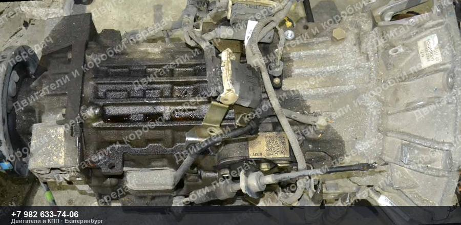
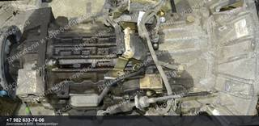
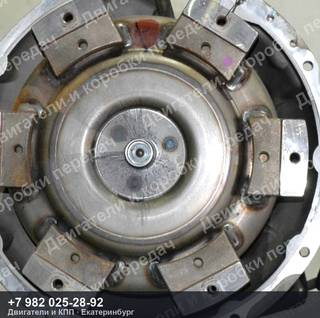
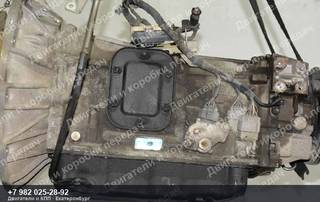
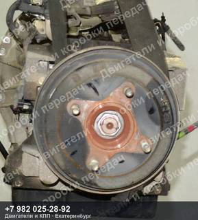
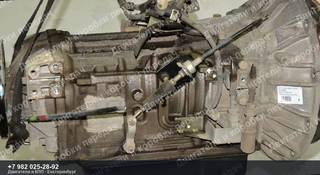

Контрактная АКПП Hino DYNA/TOYOACE XZC605/XZU605
28 000 ₽
Контрактная АКПП Hino DYNA/TOYOACE XZC605/XZU605 — двигатель N04C, код A860E.
| Марка | HINO |
| Модель | DYNA/TOYOACE |
| Кузов | XZC605/XZU605 |
| Двигатель | N04C |
| Тип | Автомат |
| Номер детали | A860E |
| OEM-номера | 3501037G51, 3501037G5100 |
| Состояние | Б/у |
| Артикул | ДК-491763 |
Гарантия на проверку и установку · бесплатная доставка до транспортной компании ·
отправим фото и видео агрегата до оплаты
Контрактная АКПП Hino DYNA/TOYOACE XZC605/XZU605 — что важно знать
Агрегат снят с автомобиля HINO DYNA/TOYOACE XZC605/XZU605. Двигатель N04C. Номер детали A860E. Подходящие OEM-номера: 3501037G51, 3501037G5100.
Перед отправкой агрегат проверяем и фотографируем. Пришлём фотографии и видео работы именно этого экземпляра, поможем проверить совместимость по VIN вашего автомобиля. Отправка из Екатеринбурге до транспортной компании — бесплатно, дальше — любой ТК до вашего города.